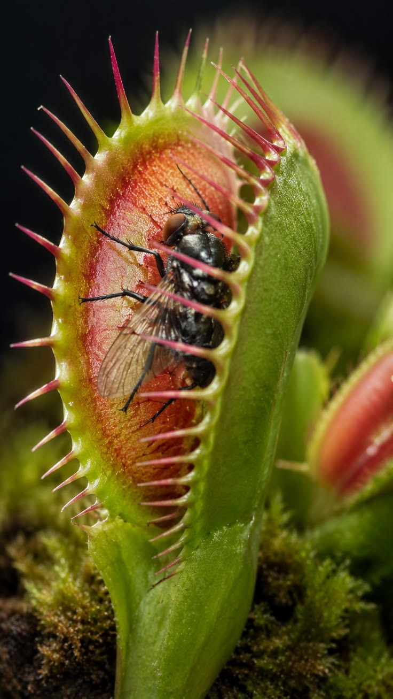
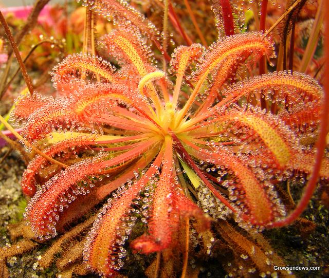

Plant Digestion
Carnivorous plants digest their prey using specialized structures and digestive chemicals that allow them to absorb nutrients from insects and other small animals. Unlike animals, carnivorous plants do not have a stomach or digestive tract, so they digest their prey using modified leaves and trapping structures. After an insect or other organism is captured, many carnivorous plants release digestive enzymes that break down proteins, fats, and other organic materials into smaller molecules. These enzymes work similarly to the digestive enzymes found in animals, but the digestion happens outside the plant’s body rather than inside a stomach. Some carnivorous plants also produce acidic fluids that help break down their prey, while others rely partly on bacteria and other microorganisms to decompose it. Once the prey has been broken down, specialized cells on the surface of the trap absorb nutrients such as nitrogen, phosphorus, and other minerals. These nutrients are especially valuable because carnivorous plants often live in wet, acidic environments with soil that is low in essential nutrients. The nutrients absorbed from prey help support important processes such as growth, reproduction, and the production of new leaves. However, carnivorous plants still depend on photosynthesis to produce most of their energy. Carnivory is therefore an adaptation that gives these plants an additional source of nutrients and helps them survive in environments where many other plants would struggle.

How long does it take for a carnivorous plant to digest its prey?
The amount of time a carnivorous plant takes to digest its prey depends on the species, the size of the prey, and environmental conditions. In general, digestion can take anywhere from a few days to several weeks. Smaller prey are usually digested faster because there is less material for the plant to break down. For example, a Venus flytrap typically takes around 5–12 days to digest a small insect, while larger prey can take longer. Pitcher plants may take several days or even weeks because the prey is broken down in a pool of digestive liquid at the bottom of the pitcher. During digestion, enzymes and acidic fluids break down the prey and release nutrients that the plant can absorb. Temperature, moisture, and the overall health of the plant can also affect how quickly digestion occurs. Warmer temperatures and appropriate moisture levels can help digestive processes work more efficiently. Once most of the useful nutrients have been absorbed, the plant finishes processing the remaining material. The trap can then reopen or continue growing new traps, allowing the plant to capture and digest more prey.
How do different carnivorous plants digest their prey?
- Venus Flytrap (Dionaea muscipula)
- Sundew (Drosera)
- North American Pitcher Plant Digestion Time Lapse
- Sundew Digestion Time Lapse
